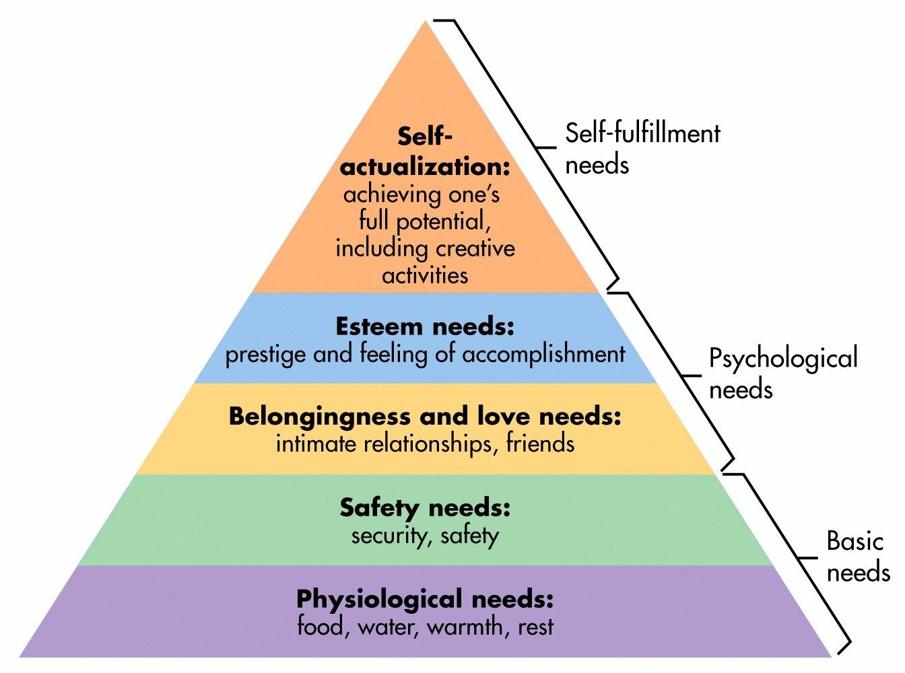

Aesthetics is the new tasty - Food Porn Phenomenon

In the digital environment, where physical interaction is absent, the aesthetic factor is very important. In this post I want to analyse the impact of the food porn
phenomenon in the digital domain and, most important, on the viewers.
Like all the other industries, the food industry was also impacted by the digital evolution. The old recipes books
 became cooking blogs and social media accounts about cooking. Nowadays, very popular on every social media platform are fast cooking videos that can be easily recreated by anyone. Content creators are rapidly adapting to the high requested food related trends.
became cooking blogs and social media accounts about cooking. Nowadays, very popular on every social media platform are fast cooking videos that can be easily recreated by anyone. Content creators are rapidly adapting to the high requested food related trends.
@cezarfit365 Fast meal? üç¥ ##invatapetiktok ##tiktokromania
♬ Rasputin (7" Version) - Boney M.
Eating is the basic necessity for the human body, individuals need food to survive. This fact is theorised by the psychologist Abraham Maslow who placed food at the bottom of his pyramid scheme of needs for human beings.
 This explains why food is everywhere.Food industry had an amazing break-through in the digital media creating its own niche – food media – where restaurants, chefs, amateur chefs or people interested in food related content started posting different pictures and videos to showcase their work. Quickly, the phenomenon became a marketing tool for bussinesses in the food industry to advertise their products and eventually to sell them.
Short background
In 1957 Roland Barthes writes in his book, Mythologies , about food psychology. He didn’t use the expression food porn
, but he commented that the effect of the food images is to induce the viewer into a visually pleasing fantasy because most of them cannot afford to cook the type of meals that are portrayed in the photos.
The expression was firstly used in 1979 when Michael Jacobson compered healthy and unhealthy food. He used the term Food Porn
in an article in the Nutrition Action Healthletter newsletter to describe the type of food that is unhealthy for the human organism.
The after teste
The stylisation of food became a technique to give people more pleasure, it is important that the aspect of the food is visually plesing because it arrouses the apetite. Just by gazing at food will give the viewer satisfaction without acctually being fizicaly satisfied through the olfactive sences.Food media stimulates an appetite that gives pleasure through being insatiable.
This also explains the use of the term porn
, because this phenomenon transformed the primary necessity into a visually pleasing proces.
The most visible and well-known effect of the food porn phenomenon is the increase of consumerism. The reason for this is the fact that everyone wants to try various recipes they see on social media and some of them want to communicate their online friends the results. As more and more people try the same recipe it becames a trend. A recent example for this is the viral recipe of pasta with baked feta cheese and tomatoes.
@everything_delish BAKED FETA PASTA | thanks @feelgoodfoodie for the recipe inspo! ##recipe ##pasta ##feta ##bakedfeta ##bakedfetapasta ##cheese ##food ##tiktokfood
♬ Aesthetic - Xilo
Moreover, this digital phenomenon strarted an objectification proces. Here, food is seen as a cultural object worth gazing at, but this is situated between two concepts: online consumption and cooking as an art form. The online community can be seen as a big family that shares a meal toghether because through the online engagement they become part of a shared consumption of food.